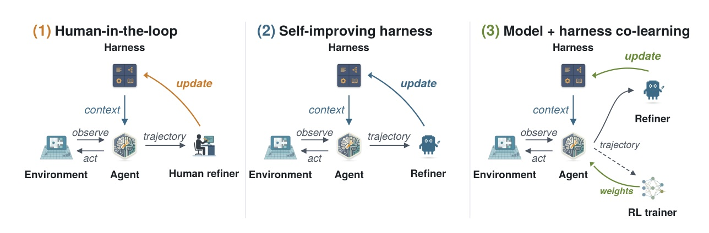
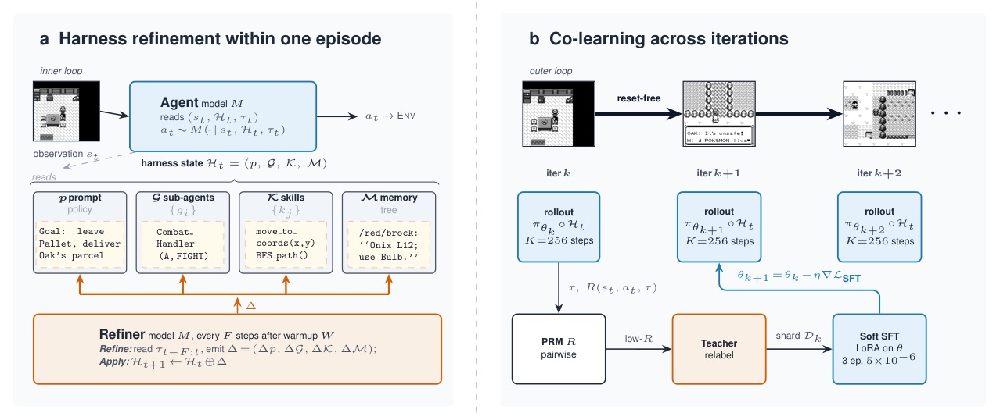
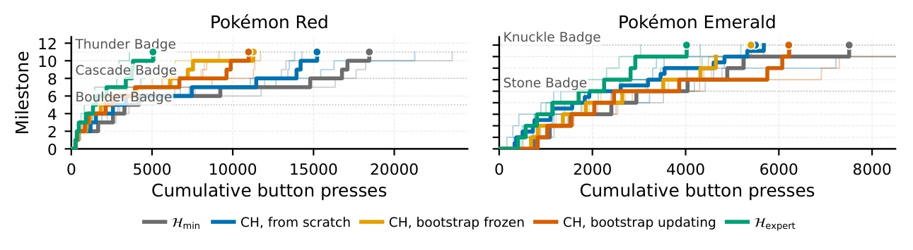
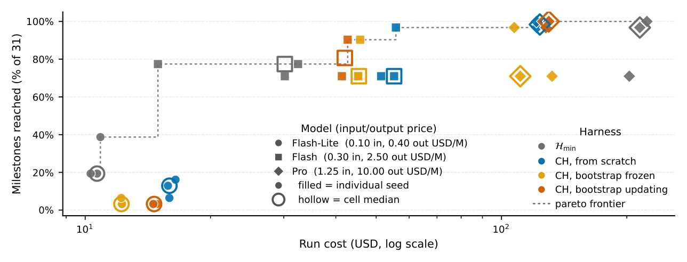
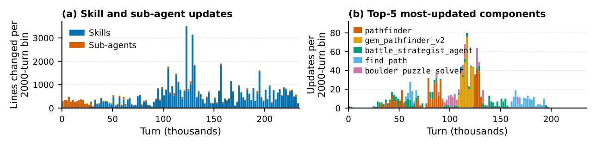
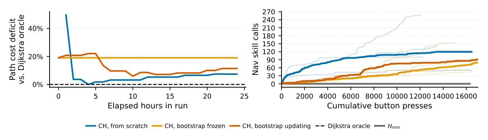
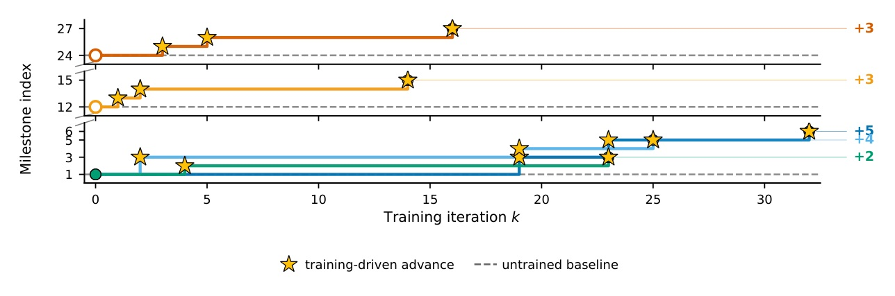

把「人類替 agent 改 scaffold」改成 reset-free 的自我修補 loop：prompt、sub-agents、skills、memory 一邊互動一邊被 Refiner 更新。
不是讓模型「想久一點」，而是讓它在同一條長程軌跡裡，改造自己用來行動的 harness。
Continual Harness 把 trajectory 變成 prompt / sub-agent / skill / memory 的 CRUD edit；再把 open-source model 放進同一 live-refining loop 裡做 reset-free DAgger+PRM+soft SFT。


Reset-free 的價值在於：錯誤訊號不被 episode boundary 洗掉。
Failure signatures 在同一次長程互動中累積；早期 navigation loop、late-game battle、dialogue chain 都能成為後續 Refiner edits 的依據。


| Model / condition | Milestones | Cost | Read |
|---|---|---|---|
| Pro HCH from scratch | 100% | $130 median | Pareto-dominant |
| Pro Hmin | 98% | $215 | baseline |
| Pro bootstrap variants | 96-100% | $110-$140 | best cost band |
| Flash bootstrap-updating | 80% | $42 | small gain, high variance |
| Flash Hmin | 77% | $30 | cheaper baseline |
| Flash-Lite HCH variants | 3-13% | comparable/higher | below floor |
| Flash-Lite Hmin | 20% | $11 | minimal wins |



把 agent 改成「會改自己的工作台」，比單純加 memory 更接近長程 self-improvement。
但 scaffold synthesis 會放大模型的能力差：強模型能利用新增工具與 memory；弱模型只是多了一堆會誤用的狀態。
“Every F steps, a Refiner reads the recent trajectory window for failure signatures and emits per-component edits Δ=(Δp, ΔG, ΔK, ΔM). The agent does not reset; the updated harness Ht+1 = Ht ⊕ Δ enters the agent’s context on the next step.”
每 F 步，Refiner 讀最近 trajectory window 找 failure signatures，對 prompt/sub-agents/skills/memory 產生 edits；agent 不 reset，更新後的 harness 立刻進入下一步 context。§3.1 p.4
“On Pro, Continual Harness is strictly Pareto-dominant over Hmin: from-scratch HCH reaches 100% of milestones at a $130 median, against Hmin at 98% for $215.”
在 Pro 上，Continual Harness 對 Hmin 是嚴格 Pareto-dominant：from-scratch HCH 用 $130 median 達到 100% milestones，Hmin 則是 $215 達到 98%。§4.4 p.7
“This improvement is in-loop and reset-free: failures from earlier invocations are diagnosed by the Refiner and the affected skills are repaired before later invocations within the same episode.”
skill improvement 是 loop 內、reset-free 的：早期 invocation 的 failure 被 Refiner 診斷，受影響 skill 在同一 episode 後續 invocation 前被修好。§4.6 p.9
架構、訓練、對齊；頂會 accepted 優先。